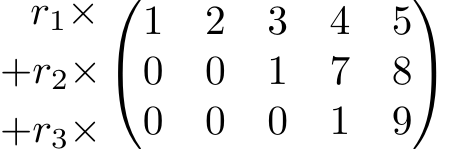

1 Introduction and Revision
This module expands on two part-modules from the second year. In the first half we shall be studying ideas in Linear Algebra that expand on the introduction to this subject expounded in Exploring Algebra and Analysis. In the second half we delve more deeply into the study of the algebraic object called a ring which was first introduced formally in Abstract Algebra.
1.1 Revision of Linear Algebra
We begin with a recap of some of the basic ideas and concepts from Linear Algebra which you have seen in the Exploring Algebra and Analysis module. The main difference to note here is that all of the results will be expressed in terms of vector spaces over a general field \(\mathcal{F}\), rather than the specific field \(\R\). There is a set of examples (questions R.1 – R.6 in Section 1.3 at the end of the chapter).
Definition 1.1 (Vector space) Let \(\F\) be a field. We say that a set \(V\) is a vector space over \(\F\) if addition of elements of \(V\) and multiplication of elements of \(V\) by scalars from \(\F\) are both defined such that the vector space axioms hold. These axioms are as follows:
- A0.
- \(\vecx,\vecy\in V\imp \vecx+\vecy\in V\).
- A1.
- For all \(\vecx,\vecy,\vecz\in V,\:\:\: (\vecx+\vecy)+\vecz=\vecx+(\vecy+\vecz)\).
- A2.
- For all \(\vecx,\vecy\in V,\:\:\: \vecx+\vecy=\vecy+\vecx\).
- A3.
- There exists an element \(\veczero\in V\) such that \(\vecx+\veczero=\vecx\) for all \(\vecx\in V\).
- A4.
- For all \(\vecx\in V\), there exists \(-\vecx\in V\) such that \(\vecx+(-\vecx)=\veczero\).
- M0.
- \(\lambda\in \F, \vecx\in V\imp \lambda\vecx\in V\)
- M1.
- For all \(\vecx,\vecy\in V\) and for all \(\lambda\in \F,\:\:\: \lambda(\vecx+\vecy)=\lambda\vecx+\lambda\vecy\).
- M2.
- For all \(\vecx\in V\) and for all \(\lambda,\mu\in \F,\:\:\: (\lambda+\mu)\vecx=\lambda\vecx+\mu\vecx\).
- M3.
- For all \(\vecx\in V\) and for all \(\lambda,\mu\in \F,\:\:\: \lambda(\mu\vecx)=(\lambda\mu)\vecx\).
- M4.
- For all \(\vecx\in V\), \(1\vecx=\vecx\).
- In a vector space \(V\), we refer to the elements of \(V\) as vectors.
- A vector space cannot be empty by A3.
- For \(\vecx \in V\), the vector \(-\vecx\) is called the negative of \(\vecx\).
- A vector space is sometimes called a linear space.
Recall the following lemmas, which we state without proof:
Lemma 1.1 Let \(V\) be a vector space. There is only one zero vector in \(V\).
Lemma 1.2 The negative of a vector in a vector space \(V\) is unique.
Lemma 1.3 Let \(V\) be a vector space. For all \(\vecx\in V\), \(0\vecx=\veczero\).
Lemma 1.4 Let \(V\) be a vector space. For all \(\lambda\in \F\), \(\lambda\veczero=\veczero\).
Lemma 1.5 Let \(V\) be a vector space. For all \(\vecx\in V\), \(\lambda\in \F\), \[\lambda\vecx=\veczero\imp \lambda=0\:\:\:\:{\rm{or}}\:\:\:\: \vecx=\veczero.\]
We are often interested in whether or not a subset of vectors from a vector space satisfies the conditions to be a vector space in its own right. If so, it forms a subspace.
Definition 1.2 (Subspace) Let \(V\) be a vector space over the field \(\F\). We say that a subset \(U \subseteq V\) which is a vector space in its own right is called a subspace of \(V\).
It is not necessary to check all of the axioms to determine whether a subset forms a subspace; the following lemma says we need only check three things.
Lemma 1.6 (Checking Lemma) Let \(V\) be a vector space over the field \(\F\). A subset \(U\subseteq V\) is a subspace of \(V\) if the following three conditions hold:
- \(U\neq\emptyset\);
- \(\vecx,\vecy\in U\imp \vecx+\vecy\in U\);
- \(\lambda\in \F,\vecx\in U\imp \lambda\vecx\in U\).
The following three lemmas concern important properties of subspaces:
Lemma 1.7 Let \(V\) be a vector space over the field \(\F\). The zero vector \(\veczero\) belongs to every subspace of \(V\).
Lemma 1.8 Let \(A\in \F_{m\times n}\). The set \[N(A)=\{\vecX\in \F_{n\times 1} \where A\vecX=\veczero\}\] is a subspace of \(\F_{n\times 1}\).
Lemma 1.9 Let \(V\) be a vector space over the field \(\F\) and let \(U\) and \(W\) be subspaces of \(V\). Then \(U\cap W\) is also a subspace of \(V\).
One of the most fundamental concepts in algebra is that of linear independence. This, in itself, is derived from the concept of a linear combination and we remind ourselves of the important definitions and results.
Definition 1.3 (Linear combination) Let \(\vecx_{1},\vecx_{2},...,\vecx_{k}\) be vectors in a vector space \(V\). A linear combination of the sequence \((\vecx_{1},\vecx_{2},...,\vecx_{k})\) is an expression of the form \[\lambda_{1}\vecx_{1}+\lambda_{2}\vecx_{2}+...+\lambda_{k}\vecx_{k},\] where \(\lambda_{1},\lambda_{2},...,\lambda_{k}\in \F\).
Definition 1.4 (Span) Let \(V\) be a vector space and let \((\vecx_{1},...,\vecx_{k})\) be a sequence of vectors in \(V\). The span of the sequence \((\vecx_{1},...,\vecx_{k})\) is the set of all linear combinations of the vectors in the sequence. Hence \[{\rm{span}}(\vecx_{1},...,\vecx_{k})=\{\lambda_{1}\vecx_{1}+\lambda_{2}\vecx_{2}+...+\lambda_{k}\vecx_{k} \where \lambda_{1},\lambda_{2},...,\lambda_{k}\in \F\}.\] We define the span of the empty sequence to be the set consisting of the zero vector, \(\{\veczero\}\).
Lemma 1.10 Let \((\vecx_{1},...,\vecx_{k})\) be a sequence of vectors in a vector space \(V\). Then \(\spn (\vecx_{1},...,\vecx_{k})\) is a subspace of \(V\).
Definition 1.5 (Linear independence) Let \((\vecx_{1},...,\vecx_{k})\) be a sequence of vectors in a vector space \(V\). We say that the sequence is linearly independent (or L.I.) if \[\lambda_{1}\vecx_{1}+\lambda_{2}\vecx_{2}+...+\lambda_{k}\vecx_{k}=\veczero\imp \lambda_{1}=\lambda_{2}=...=\lambda_{k}=0.\:\:\:\:\:\:\:\:\: (\lambda_{i}\in \F)\]
Definition 1.6 (Linear dependence) Let \((\vecx_{1},\vecx_{2},...,\vecx_{k})\) be a sequence of vectors in a vector space \(V\). The sequence is linearly dependent (or L.D.) if there exist scalars \(\lambda_{1},\lambda_{2},...,\lambda_{k}\in \F\), not all zero, such that \[\lambda_{1}\vecx_{1}+\lambda_{2}\vecx_{2}+...+\lambda_{k}\vecx_{k}=\veczero.\]
The following are important results on linear independence/dependence.
Lemma 1.11 Let \(L=(\vecx_{1},\vecx_{2},...,\vecx_{k})\) be a linearly independent sequence of vectors in a vector space \(V\). If \(\vecx\in V\) can be written as a linear combination of the vectors in \(L\), then this representation is unique.
Lemma 1.12 If a sequence of vectors in a vector space \(V\) contains a repetition, then the sequence is linearly dependent.
Lemma 1.13 If a sequence of vectors in a vector space \(V\) contains the zero vector then the sequence is linearly dependent.
Lemma 1.14 Let \(V\) be a vector space and let \(\vecx\in V\) be non-zero. Then the sequence \((\vecx)\) is linearly independent.
Two important theorems from the second year module are the Minus Theorem and the Plus Theorem.
Theorem 1.1 (Minus Theorem) Let \(V\) be a vector space. Suppose that the vectors \(\vecx_{1},...,\vecx_{k}\in V\) are linearly dependent. Then there exists \(j\in\{1,2,...,k\}\) such that \[\spn(\vecx_{1},...,\vecx_{j-1},\vecx_{j+1},...,\vecx_{k})=\spn(\vecx_{1},...,\vecx_{k}).\]
The way to think about this result is that we can remove a vector from a linearly dependent sequence without changing the span. However, we need to be careful with the wording ‘there exists’; we cannot remove any vector, we need to choose carefully.
Theorem 1.2 (Plus Theorem) Let \(V\) be a vector space and suppose that the sequence \((\vecx_{1},...,\vecx_{k})\) in \(V\) is linearly independent. Then, for any \(\veca \in V\), \[\veca\notin\spn(\vecx_{1},...,\vecx_{k})\imp (\vecx_{1},...,\vecx_{k},\veca)\:\:\:\text{is linearly independent.}\]
The way to think of this theorem is that we can add a certain vector to a linearly independent sequence and still have a linearly independent sequence. But, we cannot just add any vector; it has to be a vector that is not a linear combination of the vectors in the set. These two theorems can be used to prove the following theorem, known as the ‘Exchange Lemma’, which we state without proof.
Theorem 1.3 (Exchange Lemma) Let \(V\) be a vector space and suppose that the sequence \((\vecx_{1},...,\vecx_{m})\) in \(V\) is linearly independent and that the sequence \((\vecy_{1},...,\vecy_{k})\) spans \(V\). Then,
- \(m\leq k\),
- there is a spanning sequence for \(V\) consisting of \(\vecx_{1},\vecx_{2},...,\vecx_{m}\) and \(k-m\) of the vectors \(\vecy_{1},\vecy_{2},...,\vecy_{k}\).
The sequence \((\vecy_1, \ldots, \vecy_k)\) spans \(V\), so every vector in \(V\) can be written as a linear combination of the \(\vecy_i\). Part (i) says that a linearly independent sequence is not longer than a sequence that spans \(V\). From part (ii) we see why it is called the ‘exchange’ lemma; we can exchange \(m\) of the \(\vecy_i\) for the \(\vecx_i\).
Another central concept in linear algebra is that of a basis:
Definition 1.7 (Finite dimension) Let \(V\) be a vector space. We say that \(V\) is finite dimensional if there exists a finite sequence of vectors that spans \(V\). Otherwise we say that \(V\) is infinite dimensional.
Definition 1.8 (Basis) Let \(V\) be a vector space. We say that a finite sequence \((\vecx_{1},...,\vecx_{k})\) of vectors in \(V\) is a basis of \(V\) if the sequence is (i) linearly independent and (ii) spans \(V\).
Lemma 1.15 Every finite dimensional vector space has a finite basis.
Lemma 1.16 Let \(V\) be a vector space and suppose that \((\vecx_{1},\vecx_{2},...,\vecx_{n})\) is a basis of \(V\) (of length \(n\)). Then every sequence of more than \(n\) vectors in \(V\) is linearly dependent.
Corollary 1.1 In a finite dimensional vector space, all bases have the same length.
So, what is meant by the ‘dimension’ of a vector space?
Definition 1.9 (Dimension) The number of vectors in each and every basis of a vector space \(V\) is called the dimension of \(V\) and is denoted \(\dimn(V)\).
The following lemma says that a finite sequence of vectors in a vector space forms a basis if it satisfies two of three properties.
Lemma 1.17 Let \(L\) be a finite sequence of vectors in a vector space \(V\). We can conclude that \(L\) is a basis of \(V\) if we know that it possesses any two of the following properties:
- it spans \(V\);
- it is linearly independent;
- it has length equal to \(\dimn(V)\).
Note that, thanks to the Exchange Lemma, we can extend a linearly independent sequence in a vector space to a basis.
Definition 1.10 (Coordinate vector) Let \((\vecx_{1},...,\vecx_{n})\) be a basis of the finite dimensional vector space \(V\). Then for each \(\vecy\in V\), we can express \(\vecy\) uniquely as \[\vecy=\gamma_{1}\vecx_{1}+...+\gamma_{n}\vecx_{n}\] for some \(\gamma_{1},...,\gamma_{n}\in \F\). The \(n\)-tuple \((\gamma_{1},...,\gamma_{n})\in \F^{n}\) is called the coordinate vector of \(\vecy\) with respect to the basis \((\vecx_{1},...,\vecx_{n})\).
Example 1.1 Show that the sequence \(L_{1}=(1+x,\:1-x)\) in \(P_{2}\) is linearly independent and use the Exchange Lemma to extend \(L_{1}\) to a basis of \(P_{2}\). Find the coordinate vector of \(p(x)=2-x+3x^{2}\) with respect to your basis.
Let \(a,b \in \R\) and suppose that \(a(1+x) + b(1-x) = 0\) (where \(0\) is the zero polynomial). Equating coefficients, it follows that \(a+b =0\) and and \(a-b = 0\). Therefore \(a = b = 0\) since adding the two equations gives \(2a = 0\).
The set \(B=(1,x,x^2)\) is the standard basis for \(P_2\). By the Exchange Lemma, there is an element \(v \in B\) such that \((1+x, 1-x, v)\) is a spanning set for \(P_2\). Since all bases for \(P_2\) have the same length then \((1+x, 1-x, v)\) must be a basis for \(P_2\) as well (since otherwise we may find a basis for \(P_2\) of length strictly less than 3!). Thus the vector \(v \in B\) is any element of \(B\) which is not in the span of \(L_1\). This follows since \((1+x,1-x,v)\) must be linearly independent. Since \(x^2\) does not occur in any of the vectors in \(P_2\), then \(x^2\) is the obvious choice for \(v\). Indeed we have, \[\begin{align*} 1 &= \frac{1}{2}((1 + x) + (1-x)),\\ x &= \frac{1}{2}((1+x) - (1-x)) \end{align*}\] whereas if \(a (1+x) + b(1-x) = x^2\) for \(a,b \in \R\) then (equating coefficients) \(a = b = 0\) which is a contradiction since \(x^2 \ne 0\).
Therefore \(B'=(1+x, 1-x, x^2)\) is a basis for \(P_2\).
Using the formula above expressing \(1\) and \(x\) in terms of the basis \(B'\), we have \[p(x)=2-x+3x^{2} =((1+x) + (1-x)) -\frac{1}{2}((1+x) - (1-x)) + 3x^2 = \frac{1}{2}(1+x) + \frac{3}{2}(1-x) + 3x^3.\]
1.2 Some Further Results
Before we can progress with our study of linear mappings we require some further theory. The first few results you will have seen previously, the rest is new material.
1.2.1 Dimension of Subspaces
Lemma 1.18 Let \(W\) be a subspace of a finite dimensional vector space \(V\). Then
- \(W\) is also finite dimensional,
- \(\dimn(W)\leq \dimn(V)\),
- if \(W\neq V\) then \(\dimn(W)<\dimn(V)\),
- any basis of \(W\) can be extended to produce a basis of \(V\).
Let \(n = \dim(V)\). Since \(W\) is a subspace of \(V\), the length of a linearly independent sequence in \(W\) is at most \(n\). Let \(m\) be maximum length of a linearly independent sequence in \(W\) and let \(B = (w_1, w_2, \ldots, w_m)\) be a linearly independent sequence in \(W\) of length \(m\). We prove that \(b\) is a basis for \(w\).
Let \(w \in W\) and suppose that \(w \ne \spn(B)\). Then \(B' = (w_1, w_2, \ldots, w_m, w)\) is also linearly independent. By the Plus Theorem (Theorem 1.2). Therefore \(B'\) is a linearly independent subset of \(W\) of length \(m+1\) which is a contradiction. We see that \(w \in \spn(B)\). Since \(w \in W\) was arbitrarily chosen, \(\spn(B) = W\) and \(W\) is finite dimensional and has dimension less than or equal to \(n\).
If the dimension of \(W\) is \(n\), then any basis for \(W\) is a basis for \(V\) (any linearly independent subset of \(V\) of length \(n\) is a basis for \(V\)) and \(W=V\). Therefore if \(W \ne V\), then \(\dim(W)< \dim(V)\).
The final part of the lemma is a consequence of the Exchange Lemma (Theorem 1.3).
Lemma 1.19 Let \(S\) and \(T\) be finite dimensional subspaces of a vector space \(V\) such that
- \(S\subseteq T\) and
- \(\dimn(S)=\dimn(T)\).
Then \(S=T\).
This is a direct consequence of part iv. of Lemma 1.18 since as \(S \subseteq T\) then \(S\) is a subspace of \(T\) as well.
Note that in the statement of Lemma 1.19 although \(S\) and \(T\) are assumed to be finite dimensional, \(V\) is does not have to be finite dimensional.
For example we may take \(V = \R[x]\), \(S= P_4\) and \(T = P_6\); \(S\) and \(T\) are finite dimensional subspaces of \(V\), but \(V\) is not finite dimensional.
Definition 1.11 (Sum of subspaces) Let \(S\) and \(T\) be subspaces of a vector space \(V\). Then the sum of \(S\) and \(T\) is defined as \[S+T=\{\textbf{s}+\textbf{t} \where \textbf{s}\in S,\:\:\textbf{t}\in T\}.\]
Lemma 1.20 Let \(V\) be a vector space and let \(S\) and \(T\) be subspaces of \(V\). Then,
- \(S+T\) is also a subspace of \(V\),
- \(S+T\) contains \(S\) and \(T\) as subsets,
- \(S+T\) is the smallest subspace of \(V\) that contains both \(S\) and \(T\).
We use the Checking Lemma (Lemma 1.6).
Clearly \(S+T\) contains the zero vector since \(\vec{0}+ \vec{0} = \vec{0}\).
Let \(\vec{s}_1, \vec{s}_2 \in S\) and \(\vec{t}_1, \vec{t}_2 \in T\), then \((\vec{s}_1 + \vec{t}_1) + (\vec{s}_2 + \vec{t}_2) = (\vec{s}_1 + \vec{s}_2) + (\vec{t}_1 + \vec{t}_2) \in S+T\).
Let \(\vec{s} \in S\), \(\vec{t} \in T\) and \(a \in \F\). Then \(a (\vec{s} + \vec{t}) = a \vec{s} + a \vec{t} \in S + T\).
Therefore \(S+T\) is non-empty, closed under addition and closed under scalar multiplication — it is a subspace of \(V\).
Let \(\vec{s} \in S\) and \(\vec{t} \in T\), then \(\vec{s} = \vec{s} + \vec{0} \in S+T\) and \(\vec{t} = \vec{0} + \vec{t} \in S+T\). Therefore \((S \cup T) \subseteq S+T\).
Let \(W\) be any other subspace containing both \(S\) and \(T\). Then \(S+T \subseteq W\) since \(W\) contains both \(S\) and \(T\) and is closed under addition.
Theorem 1.4 Let \(V\) be a finite dimensional vector space and let \(S\) and \(T\) be subspaces of \(V\). Then \[\dimn(S+T)=\dimn(S)+\dimn(T)-\dimn(S\cap T).\]
The final term, \(S \cap T\), accounts for the overlap between \(S\) and \(T\).
Let \(B_{S\cap T}=(\vec{c}_{1}, \vec{c}_2, \ldots, \vec{c}_{j})\) be a basis for \(S \cap T\). Since \(S \cap T\) is a subspace of both \(S\) and \(T\), by the Exchange Lemma (Theorem 1.3) there are vectors \(\vec{s}_1, \ldots, \vec{s}_{k} \in S\) and \(\vec{t}_1, \ldots \vec{t}_{l} \in T\) such that \[B_{S}=(\vec{c}_{1}, \ldots, \vec{c}_{j}, \vec{s}_1,\ldots, \vec{s}_{k})\] is a basis for \(S\) and \[B_{T}=(\vec{c}_{1}, \ldots, \vec{c}_{j}, \vec{t}_1,\ldots, \vec{t}_{l})\] is a basis for \(T\).
Consider the sequence \[B:=(\vec{c}_{1}, \ldots, \vec{c}_{j}, \vec{s}_1,\ldots, \vec{s}_{k},\vec{t}_1,\ldots, \vec{t}_{l}).\] Clearly \(S\) and \(T\) are contained in the span of \(B\) and so \(B\) spans \(S+T\) (by Lemma 1.20 part c.). We show that \(B\) is linearly independent.
First note that \[\spn(\vec{t}_1,\vec{t}_{2},\ldots, \vec{t}_{l}) \cap \spn(\vec{c}_{1}, \ldots, \vec{c}_{j}, \vec{s}_1,\ldots, \vec{s}_{k}) = \{\vec{0}\}.\] Since otherwise, there is an element \(\vec{t} \ne \{0\} \in \spn(\vec{t}_1,\vec{t}_{2},\ldots, \vec{t}_{l})\) which is an element of \(S\) and so of \(S \cap T\). Thus, \(\vec{t}\) can be written as a linear combination of of the sequence \(B_{S \cap T}\). This means that there is an element of \(T\) which can be written in two different ways as a linear combination of the sequence \(B_{T}\) contradicting the linear independence of \(B_{T}\).
Now let \(c_1, \ldots, c_j, s_1, \ldots, s_k, t_1, \ldots, t_l \in \F\) and consider the equation:
\[\begin{equation*} \sum_{i=1}^{j}c_i \vec{c}_{i} + \sum_{i=1}^{k} s_i \vec{s}_{i} + \sum_{i=1}^{l}t_i \vec{t}_{i} = \vec{0}. \end{equation*}\]
It must be the case that \(t_i = 0\) for all \(1 \le i \le k\) since otherwise \(t=\sum_{i=1}^{l}t_i \vec{t}_{i} \ne 0\) and \(t \in \spn(\vec{t}_1,\vec{t}_{2},\ldots, \vec{t}_{l}) \cap \spn(\vec{c}_{1}, \ldots, \vec{c}_{j}, \vec{s}_1,\ldots, \vec{s}_{k})\) which is a contradiction.
However, if \(t_i = 0\) for all \(1 \le i \le k\), then the \(c_i\)’s and \(s_i\)’s must also be \(0\) since \(B_{S} = (\vec{c}_{1}, \ldots, \vec{c}_{j}, \vec{s}_1,\ldots, \vec{s}_{k})\) is a basis. Therefore, \(B\) is linearly independent.
Lastly observe that \[|B| = |B_{S}| + |B_{T}| - |B_{S \cap T}| = \dim{S} + \dim{T} - \dim{S \cap T}\] as required.
Example 1.2 Let \(S,T\) and \(U\) be subspaces of \(\R^{2n-1}\) such that \(\mathbb{R}^{2n-1}=S+T=S+U\) with \(\dimn(S)=n-1\) and \(S\cap T=S\cap U=\{\veczero\}\). By considering dimensions, show that \(T\cap U\neq\{\veczero\}\).
Although \(S+T = T+U\) it is not necessarily the case that \(T = U\).
Applying Theorem Theorem 1.4, consider the following:
\[\begin{equation*} 2n-1 = \dim(s) + \dim(T) - \dim(S \cap T) \end{equation*}\] rearranging, we have
\[\begin{equation*} n = 2n-1 -n+1 = 2n-1 - \dim(s) = \dim(T) - \dim(S \cap T) = \dim(T) - 0 \end{equation*}\]
Therefore \(\dim(T) = n\). In a similar way, we have that \(\dim(T) = n\). Now observe that as \(T + U\) is a subspace of \(\R^{2n-1}\), \(\dim(T + U) \le 2n-1\). We have: \[2n-1 \ge \dim(T+U) = \dim(T) + \dim(U) - \dim(T \cap U) = 2n - \dim(T \cap U).\] Rearranging, we have that \(\dim(T \cap U) \ge 1\), thus \(T \cap U\) must contain at least one non-zero vector — \(T \cap U \ne \{\vec{0}\}\).
Definition 1.12 (Direct sum) Let \(V\) be a vector space over the field \(\F\) and let \(S\) and \(T\) be subspaces of \(V\). We say that a subspace \(W\) of \(V\) is a direct sum of the subspaces \(S\) and \(T\) if \(W=S+T\) and \(S\cap T=\{\veczero\}\). When the sum of \(S\) and \(T\) is direct we use the notation \(W=S\oplus T\).
Lemma 1.21 Let \(V\) be a vector space over the field \(\F\) and suppose that \(S\) and \(T\) are subspaces of \(V\) such that \(W=S\oplus T\). Then every element \(\vecw\in W\) can be written uniquely in the form \(\vecw=\textbf{s}+\textbf{t}\) where \(\textbf{s}\in S\) and \(\textbf{t}\in T\).
Suppose there are elements \(\vec{s},\vec{s}' \in S\), \(\vec{t},\vec{t}' \in T\) such that \(\vec{s} = \vec{t} = \vec{s}' + \vec{t}'\). It then follows that \(\vec{s} - \vec{s}' = \vec{t}' -\vec{t}\). Therefore \(\vec{s}-\vec{s}' = \vec{t}'-\vec{t} \in S \cap T\). Since \(S \cap T = \{\vec{0}\}\), then \(\vec{s}-\vec{s}' = \vec{0}= \vec{t}-\vec{t}'\) and so \(\vec{s} = \vec{s}'\) and \(\vec{t} = \vec{t}'\) as required.
Example 1.3
Let \(\vece_x= (1,0,0)\), \(\vece_{y} = (0,1,0)\) and \(\vec{e}_{z} = (0,0,1)\). Then, as these are the standard basis for \(\R^3\) every vector in \(\R^3\) can be written as a linear combination of \(\vece_x, \vece_y\) and \(\vece_z\). That is \(\R^3 = \spn(\vece_x) + \spn(\vece_y) + \spn(\vece_z)\). Notice that for any pair \((t,u) \in \{(x,y),(x,z),(y,z)\}\) \(\spn(\vece_{t}) \cap \spn(\vece_{u}) = \{\vec{0}\}\). Moreover, for \(v \in \{x,y,z\}\backslash\{t,u\}\) \((\spn(\vece_{t}) + \spn(\vece_{u})) \cap (\spn(\vece_{v})) = \{\vec{0}\}\).
It follows that \(\R^3= \spn(\vece_x) \oplus \spn(\vece_y) \oplus \spn(\vece_{z})\).
Lemma 1.22 Let \(V\) be a finite dimensional vector space over the field \(\F\) and let \(S\) and \(T\) be subspaces of \(V\) such that the sum of \(S\) and \(T\) is a direct sum. Suppose that \((\textbf{e}_{1},\textbf{e}_{2},...,\textbf{e}_{m})\) is a basis of \(S\) and \((\textbf{f}_{1},\textbf{f}_{2},...,\textbf{f}_{n})\) is a basis of \(T\). Then,
- \((\textbf{e}_{1},...,\textbf{e}_{m},\textbf{f}_{1},...,\textbf{f}_{n})\) is a basis of \(S\oplus T\),
- \(\dimn(S\oplus T)=\dimn(S)+\dimn(T)\).
We have by Theorem 1.4 \[ \dim(S + T) = \dim(S) + \dim(T) - \dim(S \cap T) = \dim(S) + \dim(T)\] since \(S \cap T= \{\vec{0}\}\).
Now since \(S \oplus T\) contains both \(S\) and \(T\), then \(S \oplus T\) contains \(S+T\). However as \(S \oplus T\) is spanned by \((\textbf{e}_{1},...,\textbf{e}_{m},\textbf{f}_{1},...,\textbf{f}_{n})\), we have:
\[\dim(S) + \dim(T) \le \dim(S \oplus T) \le \dim(S) + \dim(T)\] Therefore \(\dim(S \oplus T) = \dim(S) + \dim(T)\) and \((\textbf{e}_{1},...,\textbf{e}_{m},\textbf{f}_{1},...,\textbf{f}_{n})\) is in fact a basis for \(S \oplus T\).
1.2.2 Back To Matrices
Let \(A=(a_{ij})\in \R_{m\times n}\) and recall that the matrix product of \(A\) with a column \(\vecX\in \R_{n\times 1}\) produces a column \(A\vecX\in \R_{m\times 1}\) where the entry in the \(i\)th row is the element \[a_{i1}x_{1}+a_{i2}x_{2}+...+a_{in}x_{n}.\] Of course we can view columns and rows in the matrix \(A\) as elements of \(\R^{m}\) or \(\R^{n}\) respectively.
Definition 1.13 (Row space and column space) With the matrix \(A\) as above, we define the \(i\)th row vector of \(A\) to be the vector \(\textbf{r}_{i}=(a_{i1},a_{i2},...,a_{in})\in \mathbb{R}^{n}\) and the \(j\)th column vector of \(A\) to be the vector \(\textbf{c}_{j}=(a_{1j},a_{2j},...,a_{mj})\in \mathbb{R}^{m}\). The row space of \(A\) is the subspace span\((\textbf{r}_{1},...,\textbf{r}_{m})\subset \R^{n}\). This subspace is denoted \(\row(A)\) The column space of \(A\) is the subspace span\((\textbf{c}_{1},...,\textbf{c}_{n})\subset \R^{m}\). This subspace is denoted \(\col(A)\).
There are some important points to note about row-echelon matrices.
A matrix is said to be in row-echelon form if the following conditions hold:
- the first non-zero entry in a row is \(1\) (called the pivot);
- any zero rows are grouped together at the bottom of the matrix;
- if row \(i\) is above row \(j\) (and both are non-zero), then the pivot in row \(i\) is to the left of the pivot in row \(j\).
A matrix is said to be in reduced row-echelon form if it is in row-echelon form and each column containing a pivot has zeros in every entry excluding the pivot.
Lemma 1.23 Let \(A,B\in \R_{m\times n}\). If \(A\) and \(B\) are row-equivalent then \(\row(A)=\row(B)\).
Suppose \(B\) is obtained from \(A\) by an elementary row operation. This means that one row of \(B\) has been replaced by a linear combination of the rows of \(A\). Therefore \(\row(B) \subseteq \row(A)\).
To see that \(\row(A) \subseteq \row(B)\) observe that the row of \(A\) that is missing from \(B\) can be obtained as a linear combination of the rows of \(B\) simply by re-arranging to obtain an expression for the missing row vector.
Therefore \(\row(A) = \row(B)\). The result is now an easy application of induction.
If we want to understand \(\row(A)\), then we need a basis, that is a sequence of vectors that spans and is linearly independent. The following helps:
Lemma 1.24 The non-zero rows in a row-echelon matrix form an linearly independent sequence.
The empty sequence is trivially linearly independent. Therefore if the sequence of non-zero rows of \(E\) is empty, the result holds.
We may assume that \(E\) has some non-zero rows. Let \(\vec{r}_1, \vec{r_2}, \ldots, \vec{r}_{m}\) be the non-zero rows (from top to bottom). Let \(r_1, r_2, \ldots, r_m \in \F\) and consider the expression: \[r_1 \vec{r}_{1} + r_2 \vec{r}_{2} + \ldots + r_{m}\vec{r}_{m} = \vec{0}.\] By definition of the row-echelon form, the first non-zero position of \(\vec{r}_1\) is to the left of all non-zero positions in the remaining row vectors \(\vec{r}_2 \ldots \vec{r}_{m}\). Therefore \(r_1 = 0\). We may then repeat the argument to get \(r_2 = 0, r_3 = 0,\ldots, r_m= 0\).
Therefore the sequence \((\vec{r}_1, \vec{r_2}, \ldots, \vec{r}_{m})\) is linearly independent.
Consider the following example:

The first leading entry, implies that \(r_1 = 0\), the second implies that \(r_2\) is equal to \(0\), and then \(r_3\) must be zero as well.
Lemma 1.25 The sequence of non-zero rows in a row-echelon matrix \(E\) is a basis for the row space, \(\row(E)\), and for the row space of every matrix row-equivalent to \(E\).
Any matrix row-equivalent to \(E\) has the same row space as \(E\) so it suffices to show only the first half of the statement.
By Lemma 1.24, the non-zero rows of \(E\) are linearly independent. However, the row space of \(E\) is also spanned by the sequence of its non-zero rows (if they are all zero then \(\row(E) = \{\vec{0}\}\) which is spanned by the empty sequence). Therefore the non-zero rows of \(E\) are a basis for \(\row(E)\).
Example 1.4 Find a basis of the subspace, \(S\), of \(\R^{4}\) spanned by the sequence of vectors \[((1,0,1,2),\:(2,3,0,1),\:(-1,1,1,-2),\:(1,5,3,-1)).\]
The first step is to interpret the vectors as the rows of some matrix \(M\), then we apply elementary row operations to until we get a matrix \(E\) in row-echelon form row equivalent to \(M\). The non-zero rows of \(E\) then give a basis for \(S\).
We have: \[\begin{align*} \begin{pmatrix} 1 & 0 & 1 & 2 \\ 2 & 3 & 0 & 1 \\ -1 & 1 & 1 & -2 \\ 1 & 5 & 3 & -1 \end{pmatrix} \begin{array}{c} \\ r_2 \to r_2 - 2r_1 \\ r_3 \to r_3 + r_1 \\ r_4 \to r_4 - r_1 \end{array}& \begin{pmatrix} 1 & 0 & 1 & 2 \\ 0 & 3 & -2 & -3 \\ 0 & 1 & 2 & 0 \\ 0 & 5 & 2 & -3 \end{pmatrix} \\ \begin{array}{c} \\ r_2 \leftrightarrow r_3 \\ \\ \end{array}& \begin{pmatrix} 1 & 0 & 1 & 2 \\ 0 & 1 & 2 & 0 \\ 0 & 3 & -2 & -3 \\ 0 & 5 & 2 & -3 \end{pmatrix} \\ \begin{array}{c} \\ \\ r_3 \to r_3 - 3r_2 \\ r_4 \to r_4 - 5r_2 \end{array} &\begin{pmatrix} 1 & 0 & 1 & 2 \\ 0 & 1 & 2 & 0 \\ 0 & 0 & -8 & -3 \\ 0 & 0 & -8 & -3 \end{pmatrix}\\ \begin{array}{c} \\ \\ r_3 \to r_3/8 \\ r_4 \to r_4 - r_3 \end{array} & \begin{pmatrix} 1 & 0 & 1 & 2 \\ 0 & 1 & 2 & 0 \\ 0 & 0 & 1 & 3/8 \\ 0 & 0 & 0 & 0 \end{pmatrix} \end{align*}\]
Therefore the sequence \(\left((1,0,1,2),(0,1,2,0),(0,0,1,3/8)\right)\) is a basis for \(S\).
Since we have identified the row and column subspaces, it makes sense to think about their dimensions.
Definition 1.14 (Rank) With the matrix \(A\) as above, we define the row rank of \(A\) to be the quantity \(\dimn(\row(A))\) and the column rank of \(A\) to be the quantity \(\dimn(\col(A))\). The nullity of the matrix \(A\) is the quantity \(\dimn(N(A))\) with \(N(A)\) being the subspace identified in Lemma 1.8. This will be denoted \(\nul(A)\).
We remind the reader that \[N(A) = \{\vecx \in \R_{n \times 1} \where A \vecx = \veczero \}.\]
Theorem 1.5 The row and column rank of a matrix \(A\in \R_{m\times n}\) are equal.
Let \(R\) be the reduced row-echelon form of \(A\). Then \(\row(A) = \row (R)\). It is not necessarily the case that \(\row(R) = \col(A)\). However what is true is that if a column of \(A\) can be written as a linear combination of the other columns, the corresponding column of \(R\) can be written as a linear combination of the other columns of \(R\) — that is the columns of \(R\) and the columns of \(A\) satisfy the same linear dependence relations. (The easiest way to see this is to show that if \(B\) is row equivalent to \(A\) the the columns of \(A\) and the columns of \(B\) satisfy the same linear dependence relations and apply induction.) Thus the dimension of the column space of \(R\) is equal to the dimension of the column space of \(A\).
Now the columns of \(R\) containing the pivots of \(R\) are linearly independent and span the column space of \(R\). Therefore, \(\dim(\row(R)) = \dim(\col(R)) = \dim(\col(A))\) is precisely the number of non-zero rows of \(R\).
From now on we will use the notation \(\rank(A)\) to denote the column/row rank of a matrix \(A\in\R_{m\times n}\).
Example 1.5
Consider the matrix \[A = \begin{pmatrix} 1 & -1 & 2 & -1 \\ 1 & -1 & 3 & 2 \\ -2 & 2 & -3 & 5 \end{pmatrix}.\]
We can compute the reduced echelon form of \(A\), this is the matrix \(R\) below: \[R = \begin{pmatrix}
1 & -1 & 0 & -7 \\
0 & 0 & 1 & 3 \\
0 & 0 & 0 & 0
\end{pmatrix}\]
Notice that the sequence of vectors consisting of columns one and three is linearly independent and the other two columns are in the span of this sequence. Thus we see that the rank of \(A\) is \(2\)
Set \[c_1 := \begin{pmatrix} 1 & 0 & 0 \end{pmatrix}, \quad \text{and} \quad c_2 := \begin{pmatrix} 0 & 1 & 0 \end{pmatrix}\] and notice that \(c_1\) and \(c_2\) are some of the standard basis vectors of \(\R^3\).
Let us also compute the null space of \(A\). For this we need to solve the equation: \(A \vec{x} = \vec{0}\) (note that \(\vec{x} \in \R^4\) for this multiplication to be defined). Writing \[\vec{x}= \begin{pmatrix} x_1 \\ x_2 \\ x_3 \\ x_4 \end{pmatrix},\] we have \(A\vec{x} = 0\) if and only if the following system of linear equations hold: \[\begin{align*} x_1 -x_2 + 2x_3 -x_4 &= 0 \\ x_1 - x_2 + 3x_3 + 2x_4 &= 0 \\ -2x_1 + 2x_2 -3x_3 + 5x_4 &= 0 \end{align*}\] The matrix of coefficients is \(A\), and we can apply row operations to reduce \(A\) to its echelon form \(R\), therefore, we can replace the system of equations above with the following equivalent one: \[\begin{align*} x_1 -x_2 + 0x_3 - 7x_4 &= 0 \\ 0x_1 + 0 x_2 + x_3 + 3x_4 &= 0 \end{align*}\]. We have two equations in \(4\) unknowns, so we need 2 parameters, we can choose \(x_2\) and \(x_4\). From the second equation \(x_3 = -3x_4\); from the first: \(x_1 = x_2 + 7x_4\). We have \[N(A) := \left\{ \begin{pmatrix} x_2 + 7x_4 \\ x_2 \\ -3x_4 \\ x_4 \end{pmatrix} : x_2, x_4 \in \R \right\} = \spn\left( \begin{pmatrix} 1 \\ 1 \\ 0 \\ 0 \end{pmatrix}, \begin{pmatrix} 7 \\ 0 \\ -3 \\ 1 \end{pmatrix} \right).\] Therefore, the nullity of \(A\) is two since \[\left( \begin{pmatrix} 1 \\ 1 \\ 0 \\ 0 \end{pmatrix}, \begin{pmatrix} 7 \\ 0 \\ -3 \\ 1 \end{pmatrix} \right)\] is a basis for the null space.
Observe that \(\rank(A) + \nul(A) = 4\) which is the dimension of \(\R^4\).
1.3 Problem Sheet 1
For the example class in Week 2.
Verify that the set of all positive real numbers, \(\R_{>0}\), is a vector space over \(\R\) when given the addition and scalar multiplication defined below: \[\begin{equation*} x\oplus y=xy,\:\:\:\:\:\: \lambda x=x^{\lambda} \end{equation*}\] for all positive real numbers \(x,y\in\R_{>0}\) and for all \(\lambda\in\R\).
Consider \(\R^{2}\) with the usual addition but with scalar multiplication defined as \[\begin{equation*} \lambda(x,y)=(\lambda x,y) \end{equation*}\] for all \((x,y)\in\R^{2}\), \(\lambda\in\R\). Show that \(\R\) equipped with the usual addition and this scalar multiplication is not a vector space.
Show that the subset \[A=\{(x,y,z) \where x+2y+3z=0\}\] is a subspace of \(\R^{3}\).
Determine whether each of the following sets are subspaces of \(\R^{2}\). You should either prove that the set is a subspace or provide an appropriate counterexample as to why the set does not form a subspace.
- \(A=\{(x,y)\in\R^{2} \where y=2x\}\).
- \(B=\{(x,y)\in\R^{2} \where x\geq 0,\:\:y\geq 0\}\).
- \(C=\{(x,y)\in\R^{2} \where x=0\}\).
- \(D=\{(x,y)\in\R^{2} \where xy\geq 0\}\).
In \(\R_{2\times 2}\), let \[A=\left(\begin{array}{cc} 2 & -1 \\ 0 & 1\end{array}\right),\:\:\: B=\left(\begin{array}{cc} 1 & 0 \\ -2 & -3\end{array}\right),\:\:\: C=\left(\begin{array}{cc} 0 & 3 \\ -1 & 1\end{array}\right),\:\:\: D=\left(\begin{array}{cc} 3 & 7 \\ -1 & 8\end{array}\right).\]
- Show that \(A\in\spn(B,C,D)\).
- Find necessary and sufficient conditions on \(a,b,c,d\in\R\) for \(\left(\begin{array}{cc} a & b \\ c & d\end{array}\right)\in\spn(A,B)\).
For each of the following vector spaces, find a basis and hence state the dimension of the given space.
- \(C(A)=\{B\in\R_{2\times 2} \where AB=BA\}\) where \(A=\left(\begin{array}{cc} 1 & 1 \\ 0 & 1\end{array}\right)\).
- \(\{p\in P_{5} \where \int_{0}^{1} p(x)dx=0\}\).
- Show that the sequence \(B_{1}=((1,1,1),(0,1,1),(0,0,1))\) is a basis of \(\R^{3}\) and find the coordinate vector of \((2,3,-1)\) with respect to the basis \(B_{1}\).
- Consider the sequence \[ B_{2}=\Bigg(\left(\begin{array}{cc} 1 & 0 \\ 0 & 0\end{array}\right),\:\:\left(\begin{array}{cc} 1 & 1 \\ 0 & 0\end{array}\right),\:\:\left(\begin{array}{cc} 1 & 1 \\ 1 & 0\end{array}\right),\:\:\left(\begin{array}{cc} 1 & 1 \\ 1 & 1\end{array}\right)\Bigg) \] in \(\R_{2\times 2}\). Show that \(B_{2}\) is a basis of \(\R_{2\times 2}\). Find the coordinate vector of \(A=\left(\begin{array}{cc} 1 & 2 \\ 3 & 4\end{array}\right)\) with respect to \(B_{2}\).
- Find the coordinate vector of \(p(x)=1+2x-x^{2}\) with respect to the basis \[(1+x,x+x^{2},1+x^{2})\] of \(P_{2}\).
Verify that the sequence \(L_{2}=\Bigg(\left(\begin{array}{cc} 0 & 1 \\ 0 & 1\end{array}\right),\:\left(\begin{array}{cc} 1 & 1 \\ 0 & 1\end{array}\right)\Bigg)\) is L.I. in \(\R_{2\times 2}\) and hence use the Exchange Lemma to extend \(L_{2}\) to a basis of \(\R_{2\times 2}\).
Consider the subspaces \[\begin{align*} U & = \{(x,y,z)\in\R^{3} \where x+y+z=0\}, \\ W & = \{(x,y,z)\in\R^{3} \where x+2y-3z=0\}. \end{align*}\] of \(\R^{3}\).
- Find a basis of \(U\cap W\).
- Find \(\dimn U\) and \(\dimn W\) and hence state the value of \(\dimn (U+W)\). Deduce that \(U+W=\R^{3}\).
Let \(S\), \(T_{1}\) and \(T_{2}\) be subspaces of \(\R^{7}\) such that \[ \R^{7}=S+T_{1}=S+T_{2}. \] with \(\dimn S=3\).
- Use the theorem on dimension of sums of subspaces to show that \(\dimn T_{i}\geq 4\) (\(i=1,2\))
- Deduce that \(T_{1}\cap T_{2}\neq\{\veczero\}\).
Find a basis of the subspace \(N(A)=\{X\in\R_{4\times 1} \where AX=\veczero \}\) where \[ A=\left(\begin{array}{cccc} 1 & 1 & -1 & 1 \\ 2 & -1 & 0 & 2\end{array}\right). \]
Find the rank of the matrix \[A=\left(\begin{array}{ccc} 1 & 2 & -4 \\ 2 & -1 & 2 \\ 1 & 1 & -2\end{array}\right).\] Find also the dimension of the subspace \(N(A)=\{X\in\R_{3\times 1} \where AX=\veczero \}\).